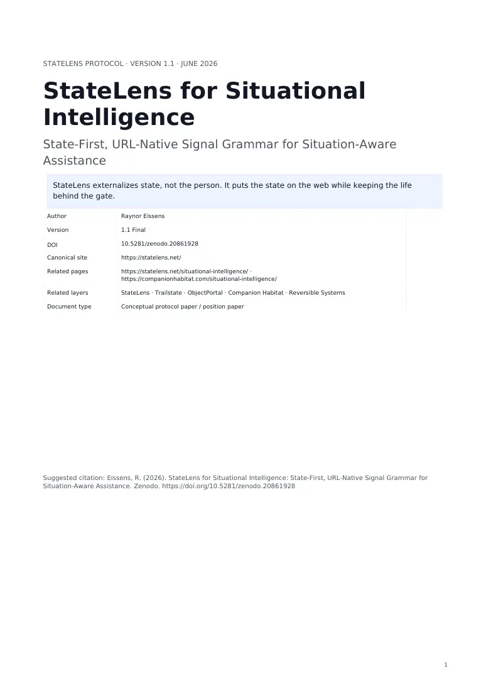
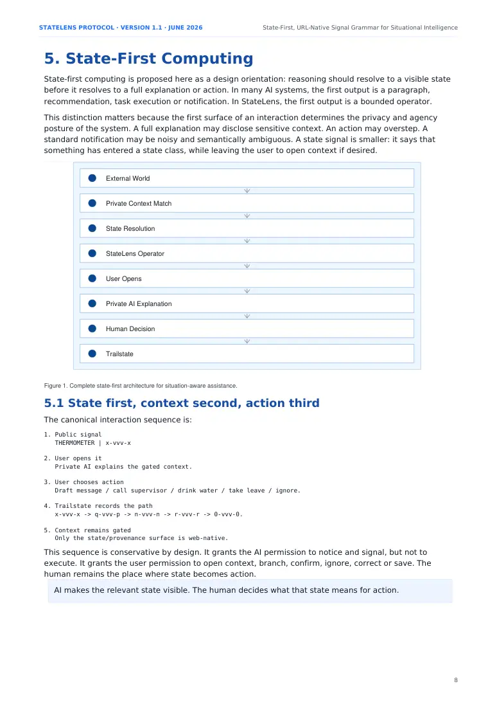
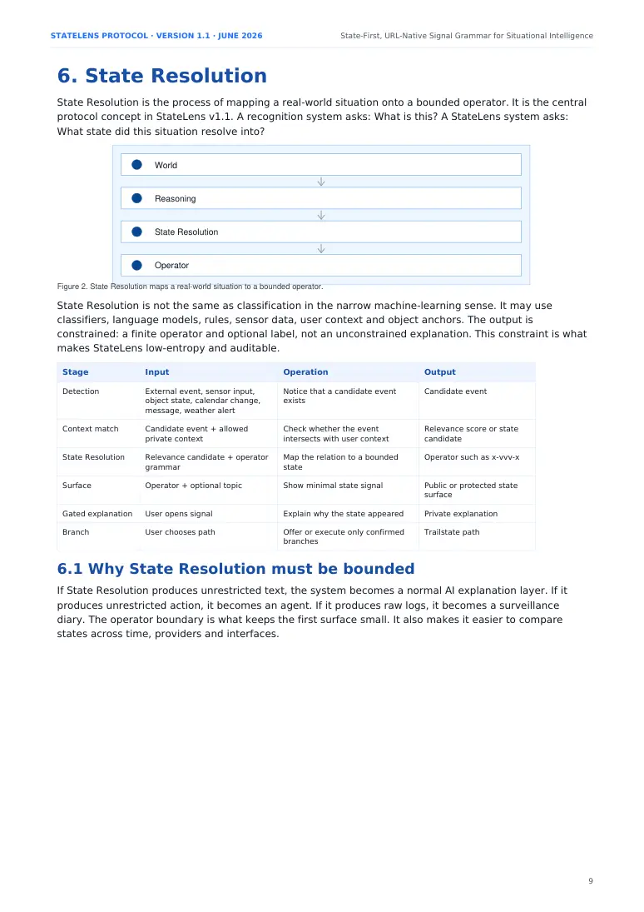
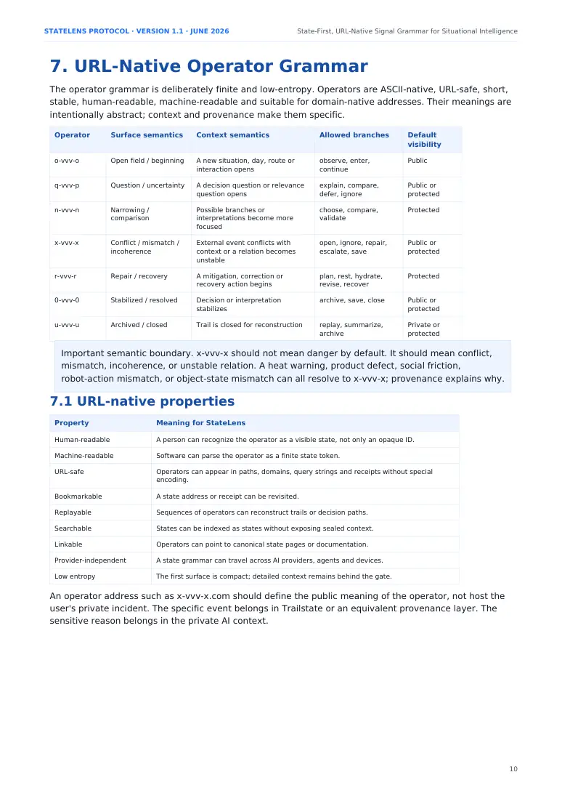
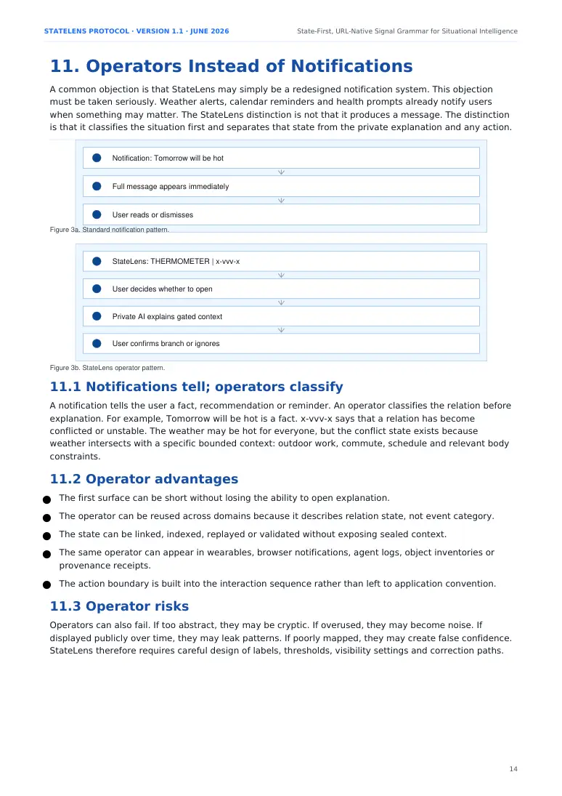
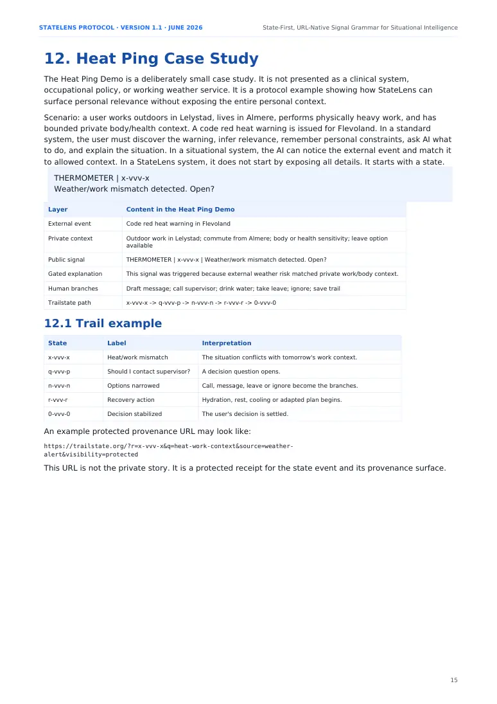
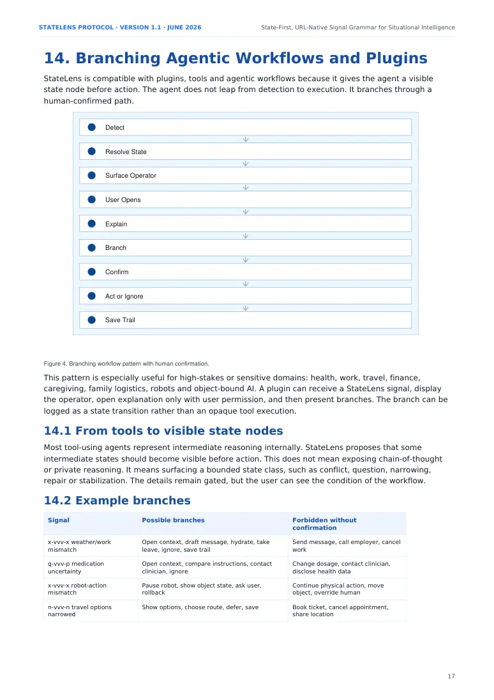

PDF page 1
STATELENS PROTOCOL · VERSION 1.1 · JUNE 2026 StateLens for Situational Intelligence
State-First, URL-Native Signal Grammar for Situation-Aware Assistance
StateLens externalizes state, not the person. It puts the state on the web while keeping the life behind the gate.
Author Raynor Eissens
Version 1.1 Final
10.5281/zenodo.20861928
DOI
Canonical site https://statelens.net/
Related pages https://statelens.net/situational-intelligence/ · https://companionhabitat.com/situational-intelligence/
Related layers StateLens · Trailstate · ObjectPortal · Companion Habitat · Reversible Systems
Document type Conceptual protocol paper / position paper
Suggested citation: Eissens, R. (2026). StateLens for Situational Intelligence: State-First, URL-Native Signal Grammar for Situation-Aware Assistance. Zenodo. https://doi.org/10.5281/zenodo.20861928
1

PDF page 2
STATELENS PROTOCOL · VERSION 1.1 · JUNE 2026 State-First, URL-Native Signal Grammar for Situational Intelligence
Abstract
StateLens began as a URL-native AI state diary protocol: a way to compress user-world moments into readable operator states so that a day could later be reconstructed without storing raw recordings, transcripts, or permanent profiles. Version 1.1 extends that role. It positions StateLens as a state-first grammar for situational intelligence: AI assistance that recognizes when an external event becomes relevant to a particular human life, surfaces a compact state signal, preserves private context behind a gate, and leaves action with the human.
The paper argues that without a state-first layer, situational AI tends to collapse into one of three less desirable forms: verbose notifications, hidden automation, or invasive profiling. StateLens introduces a different sequence: public operator first, gated explanation second, human branch third, and provenance trail fourth. A signal such as x-vvv-x does not expose the user's life. It denotes a class of state - conflict, mismatch, incoherence, or unstable relation - while the specific reason remains in a trusted private AI context or local vault.
The contribution is not a new foundation model, sensor system, clinical intervention, or emergency service. It is an interface and protocol pattern: a finite, URL-native, human-readable and machine-readable signal grammar for situation-aware assistance. It integrates ideas from ambient intelligence, context-aware computing, calm technology, situation awareness, Just-in-Time Adaptive Interventions, Semantic Web architecture, REST, provenance, and human-in-the-loop AI, while making a narrower claim: these traditions do not, by themselves, provide a public, URL-native, state-first grammar for personal situational relevance with gated context and provenance-backed action trails.
A reference Heat Ping case illustrates the pattern. A severe weather warning conflicts with a user's outdoor work context. The surface signal is only THERMOMETER | x-vvv-x | Weather/work mismatch detected. Open?. If the user opens it, the private AI explains why the state appeared, offers reversible branches, and records a Trailstate path only if chosen. The system may signal, explain, offer, draft, and save. It may not send, call, cancel, contact a third party, or decide without explicit confirmation.
Keywords
StateLens; state-first computing; situational intelligence; situation-aware assistance; URL-native operators; gated context; Trailstate; ObjectPortal; provenance; Just-in-Time Adaptive Interventions; human action boundary; calm technology; context-aware computing.
Executive summary
The central claim of this paper is simple but carefully bounded: future AI systems may increasingly detect when situations matter to people, but the open design question is how that relevance should become visible. StateLens proposes that relevance should appear first as compact state, not as a full explanation, hidden inference, or autonomous action.
The prior-art review indicates that the components of the problem are well known. Ambient intelligence makes environments responsive; context-aware computing adapts services to user state; calm technology minimizes attention cost; situation awareness studies dynamic decision environments; Just-in-Time Adaptive Interventions deliver timely adaptive support; REST and Semantic Web traditions make resources addressable; W3C PROV models provenance; and human-in-the-loop/XAI literature emphasizes oversight. However, the combination of public or semi-public operator state, gated private context, URL-native addressability, provenance-backed trails, and explicit human action boundaries is not found as a coherent user-facing protocol pattern in the reviewed materials.
The paper therefore treats StateLens v1.1 as a concept/protocol proposal. It does not claim empirical effectiveness, medical safety, or universal novelty. It offers a design vocabulary and a reference architecture. Its strongest defensible claim is that StateLens defines a state-first signal grammar for situation-aware assistance: compact public operators, gated private context, human-confirmed branches, and replayable provenance.
2
PDF page 3
STATELENS PROTOCOL · VERSION 1.1 · JUNE 2026 State-First, URL-Native Signal Grammar for Situational Intelligence
Contents
G 1. Introduction
G 2. From State Diary to State Visibility
G 3. The Situational Intelligence Gap
G 4. Prior Art and Adjacent Traditions
G 5. State-First Computing
G 6. State Resolution
G 7. URL-Native Operator Grammar
G 8. Public State and Private Context
G 9. Architecture
G 10. Relationship to Just-in-Time Adaptive Interventions
G 11. Operators Instead of Notifications
G 12. Heat Ping Case Study
G 13. Protocol Specification v1.1
G 14. Branching Agentic Workflows and Plugins
G 15. Privacy, Safeguards and Human Action Boundary
G 16. Future Applications
G 17. Limitations, Falsification and Reviewer Risks
G 18. Defensible Claims and Publication Positioning
G 19. Conclusion
G References
G Appendix A. Minimal Operator Set
G Appendix B. Signal Object Schema
3
PDF page 4
STATELENS PROTOCOL · VERSION 1.1 · JUNE 2026 State-First, URL-Native Signal Grammar for Situational Intelligence
1. Introduction
Many people expect AI to do more than wait for prompts. They expect a system that can notice when the outside world becomes relevant to their life: a severe weather alert before an outdoor workday, a travel disruption before a commitment, a safety mismatch before a tool is used, or a conflicting object state before an agent acts. This expectation is not merely a demand for stronger models. It is a demand for situated assistance.
Current AI products often remain organized around explicit initiation. Chatbots wait for a question. Assistants respond to commands. Agents execute goals supplied by the user. Automations run only after a rule or schedule has been configured. These forms are powerful, but they still require the user to notice the situation, name the relevance, provide context, and request action.
The problem addressed by this paper is narrower than general intelligence. It asks how relevance should become visible when an AI system detects that an external event intersects with a user's bounded private context. A naive design would push a verbose notification. A more invasive design would expose personal context. A more dangerous design would act automatically. StateLens proposes a fourth pattern: surface a compact state first, keep the explanation gated, allow the user to open context, then branch only with confirmation.
People do not only expect AI to answer. They expect intelligence to notice when the world becomes relevant to their life.
The phrase situational intelligence is used here in a specific sense: AI assistance that links external world events to a person's bounded context and surfaces relevance before the person has to discover the issue manually. The term overlaps with older concepts such as situation awareness, ambient intelligence, and context-aware computing, and this paper does not claim that those broader traditions are new. Instead, it introduces StateLens as a concrete state-first signal grammar that can make situational relevance readable without making the person public.
1.1 Scope and contribution
The contribution of StateLens v1.1 is a protocol pattern rather than an empirical result. It consists of four claims:
G AI systems that detect relevance should not default to full explanations, hidden automation, or public exposure of private context.
G A bounded operator can serve as an initial state surface: a visible sign that a meaningful relation has changed without disclosing why.
G URL-native operator addresses can make states portable, linkable, replayable and provider-independent.
G Trailstate-style provenance and explicit human action boundaries can preserve agency before consequential action.
The paper is therefore conservative about novelty. It builds on established work in ambient intelligence, context-aware computing, calm technology, situation awareness, Just-in-Time Adaptive Interventions, Semantic Web architecture, REST and provenance. The specific proposal is the synthesis: a public or semi-public, URL-native, low-entropy state grammar for personal situational relevance with gated context and provenance-backed human branching.
4
PDF page 5
STATELENS PROTOCOL · VERSION 1.1 · JUNE 2026 State-First, URL-Native Signal Grammar for Situational Intelligence
2. From State Diary to State Visibility
The earlier StateLens framing described a state diary: a compact trail of operators that allows AI to reconstruct a day, decision path or lived sequence without storing full raw experience. This remains a valid use case. A sequence such as q-vvv-p -> n-vvv-n -> 0-vvv-0 can mark a question opening, attention narrowing and a decision stabilizing. The system stores the shape of the transition, not a full transcript of the user's inner life.
The situational interpretation asks a complementary question: how can AI signal that a present or future situation matters without revealing the entire reason at the surface layer? This turns StateLens from a retrospective diary into a live state surface. The same operator grammar can support memory after the fact and relevance before or during the moment.
Core question StateLens role
Use case Temporal orientation
State Diary After the moment What happened, in state terms?
Reconstruct a day or decision path from compact operator trails.
Situational Signal Before or during the moment
Has a relevant state appeared?
Surface a low-entropy state so the user can choose whether to open context.
Branching Agentic Workflow
During action selection
Which branch is safe or appropriate?
Provide a visible state node before tools, plugins or agents execute.
This paper therefore defines the expanded role of StateLens as state visibility. A diary is one application. Situational intelligence is another. Branching agentic workflows are a third. In each case, the same design principle holds: state first, not transcript first; signal first, not action first.
2.1 Continuity without full capture
StateLens is motivated by a tension in AI memory and context systems. The more useful a personal AI becomes, the more context it may need. Yet storing raw recordings, transcripts and full profiles increases privacy risk, surveillance anxiety and governance burden. StateLens explores the opposite direction: compress experience into states, then preserve only enough structure for later reconstruction or situated assistance.
StateLens does not store the person. It stores the shape of relevance.
This statement is not a claim that state storage has no privacy risk. Long-term state patterns can still reveal routines, vulnerabilities or stress cycles. The claim is more modest: a bounded operator reveals less than a transcript, image, audio recording or detailed profile, and it can be paired with visibility levels, retention rules and gated provenance.
5
PDF page 6
STATELENS PROTOCOL · VERSION 1.1 · JUNE 2026 State-First, URL-Native Signal Grammar for Situational Intelligence
3. The Situational Intelligence Gap
A capable model can converse intelligently while still failing to notice that a weather event matters for a user who works outdoors. A simple alert can notice weather while failing to understand the user's work, commute, body and choices. The gap is therefore not only a lack of model capability. It is a lack of situatedness and state surface.
Pattern Trigger Typical context Limitation
Chatbot User prompt Current conversation The user must notice the problem, formulate the context and ask.
Assistant Command, wake word or app invocation
Device/app context Useful but still mostly reactive; context is siloed.
Agent User goal or task Tools, memory, files, APIs Can act, but usually after the user defines the goal.
Automation Schedule, rule or sensor
Preconfigured parameters Narrow and brittle when personal nuance changes.
Companion Relationship, chat, memory or notification
Longer-term interaction May optimize engagement rather than bounded protective relevance.
Situational intelligence
World data plus user context Requires state visibility, privacy boundaries and human control.
External event + bounded private context
The design problem can be stated as follows: how can an AI companion, wearable or ambient agent signal relevance without becoming a surveillance system, a paternalistic controller, or a noisy notification engine? StateLens answers with a state-first sequence. The system does not initially reveal everything it knows. It first surfaces a bounded operator that says: this situation has entered a meaningful state.
Situational intelligence notices relevance. StateLens makes relevance readable.
3.1 What StateLens is not
StateLens is not proposed as an emergency alert system, a medical device, a replacement for occupational policy, or a system that can guarantee safety. It is also not a claim that every situation should be abstracted into a cryptic code. The protocol is most useful when relevance is meaningful but the full reason is private, when the first surface should be compact, and when action must remain under user control.
6
PDF page 7
STATELENS PROTOCOL · VERSION 1.1 · JUNE 2026 State-First, URL-Native Signal Grammar for Situational Intelligence
4. Prior Art and Adjacent Traditions
The literature review shows substantial overlap between StateLens and older research traditions. This overlap is not a weakness; it is the academic floor. The novelty claim must be limited to what those traditions do not provide together: a public, URL-native, state-first signal grammar with private context, provenance and human-confirmed action.
Tradition Contribution Similarity to StateLens Difference
Shares the aim of unobtrusive contextual support.
Ambient Intelligence Smart environments adapt to people through embedded sensing and context sensitivity.
Often environment-centric and automation-oriented; does not define a user-facing URL-native state grammar.
Context-aware computing
Provides the context matching foundation.
Focuses on adaptation inside systems rather than public state surfaces.
Systems use location, activity, social, informational or emotional state to adapt behavior.
Supports the idea of low-attention signals.
A design philosophy, not a bounded symbolic protocol.
Calm Technology Technology moves between periphery and center of attention without overload.
Shares the relevance and decision-support orientation.
Situation Awareness Perception, comprehension and projection in dynamic situations.
Usually dashboards/data integration for operators, not compact personal-life state signals.
Strongly overlaps in timing and personalization.
JITAIs Real-time, tailored support delivered when needed, especially in mHealth.
Intervention-first and domain-specific; StateLens is state-first and protocol-oriented.
Personal AI / Assistants
Shares the direction toward context-rich assistance.
Memory, app context, proactive suggestions and workflow help.
Mostly product-internal and text/action-oriented; no public state grammar.
AI Companions Persistent relational or emotional support.
Shares continuity and situated support goals.
Often engagement/relationship oriented; may not preserve agency through state-first signals.
URI-based entities, RDF/OWL, graphs and symbolic relations.
Knowledge Representation / Semantic Web
Provides a technical precedent for addressable semantics.
Represents structured knowledge, not the UX of a personal state signal.
REST / Hypermedia Resources are identified by URIs and manipulated through representations.
Supports the idea that state/resources can be web-native.
Does not define a human-facing operator grammar for situational relevance.
Provenance / W3C PROV
Supports Trailstate-style receipts and auditability.
Entities, activities and agents can be traced through derivation.
Generic data provenance, not a live personal signal interface.
XAI / Human-in-the-loop
Explanations, oversight and human control.
Supports gated explanation and action boundaries.
Often explanation-after-model; StateLens begins with state-before-explanation.
4.1 Literature review conclusion
No reviewed tradition exactly matches the full StateLens configuration: public or semi-public URL-based state signal, bounded symbolic operator, private context gate, provenance trail, replayable transitions, and human confirmation before action. The underlying ideas are known. Their combination as a state-first signal grammar for situation-aware assistance appears to be a defensible research gap.
The strongest academic posture is therefore not to claim invention of context awareness or situational assistance. The safer claim is that StateLens proposes a distinct interface/protocol layer for making situational relevance visible while reducing immediate exposure of private context.
7
PDF page 8
STATELENS PROTOCOL · VERSION 1.1 · JUNE 2026 State-First, URL-Native Signal Grammar for Situational Intelligence
5. State-First Computing
State-first computing is proposed here as a design orientation: reasoning should resolve to a visible state before it resolves to a full explanation or action. In many AI systems, the first output is a paragraph, recommendation, task execution or notification. In StateLens, the first output is a bounded operator.
This distinction matters because the first surface of an interaction determines the privacy and agency posture of the system. A full explanation may disclose sensitive context. An action may overstep. A standard notification may be noisy and semantically ambiguous. A state signal is smaller: it says that something has entered a state class, while leaving the user to open context if desired.
External World
Private Context Match
State Resolution
StateLens Operator
User Opens
Private AI Explanation
Human Decision
Trailstate
Figure 1. Complete state-first architecture for situation-aware assistance.
5.1 State first, context second, action third
The canonical interaction sequence is:
1. Public signal THERMOMETER | x-vvv-x
2. User opens it Private AI explains the gated context.
3. User chooses action Draft message / call supervisor / drink water / take leave / ignore.
4. Trailstate records the path x-vvv-x -> q-vvv-p -> n-vvv-n -> r-vvv-r -> 0-vvv-0.
5. Context remains gated Only the state/provenance surface is web-native.
This sequence is conservative by design. It grants the AI permission to notice and signal, but not to execute. It grants the user permission to open context, branch, confirm, ignore, correct or save. The human remains the place where state becomes action.
AI makes the relevant state visible. The human decides what that state means for action.
8

PDF page 9
STATELENS PROTOCOL · VERSION 1.1 · JUNE 2026 State-First, URL-Native Signal Grammar for Situational Intelligence
6. State Resolution
State Resolution is the process of mapping a real-world situation onto a bounded operator. It is the central protocol concept in StateLens v1.1. A recognition system asks: What is this? A StateLens system asks: What state did this situation resolve into?
World
Reasoning
State Resolution
Operator
Figure 2. State Resolution maps a real-world situation to a bounded operator.
State Resolution is not the same as classification in the narrow machine-learning sense. It may use classifiers, language models, rules, sensor data, user context and object anchors. The output is constrained: a finite operator and optional label, not an unconstrained explanation. This constraint is what makes StateLens low-entropy and auditable.
Stage Input Operation Output
Candidate event
Notice that a candidate event exists
Detection External event, sensor input, object state, calendar change, message, weather alert
Context match Candidate event + allowed private context
Check whether the event intersects with user context
Relevance score or state candidate
Operator such as x-vvv-x
State Resolution Relevance candidate + operator grammar
Map the relation to a bounded state
Surface Operator + optional topic Show minimal state signal Public or protected state surface
Gated explanation User opens signal Explain why the state appeared Private explanation
Trailstate path
Branch User chooses path Offer or execute only confirmed branches
6.1 Why State Resolution must be bounded
If State Resolution produces unrestricted text, the system becomes a normal AI explanation layer. If it produces unrestricted action, it becomes an agent. If it produces raw logs, it becomes a surveillance diary. The operator boundary is what keeps the first surface small. It also makes it easier to compare states across time, providers and interfaces.
9

PDF page 10
STATELENS PROTOCOL · VERSION 1.1 · JUNE 2026 State-First, URL-Native Signal Grammar for Situational Intelligence
7. URL-Native Operator Grammar
The operator grammar is deliberately finite and low-entropy. Operators are ASCII-native, URL-safe, short, stable, human-readable, machine-readable and suitable for domain-native addresses. Their meanings are intentionally abstract; context and provenance make them specific.
Operator Surface semantics Context semantics Allowed branches Default visibility
Public
o-vvv-o Open field / beginning A new situation, day, route or interaction opens
observe, enter, continue
q-vvv-p Question / uncertainty A decision question or relevance question opens
explain, compare, defer, ignore
Public or protected
Protected
n-vvv-n Narrowing / comparison
choose, compare, validate
Possible branches or interpretations become more focused
x-vvv-x Conflict / mismatch / incoherence
open, ignore, repair, escalate, save
Public or protected
External event conflicts with context or a relation becomes unstable
Protected
r-vvv-r Repair / recovery A mitigation, correction or recovery action begins
plan, rest, hydrate, revise, recover
0-vvv-0 Stabilized / resolved Decision or interpretation stabilizes
archive, save, close Public or protected
u-vvv-u Archived / closed Trail is closed for reconstruction replay, summarize, archive
Private or protected
Important semantic boundary. x-vvv-x should not mean danger by default. It should mean conflict, mismatch, incoherence, or unstable relation. A heat warning, product defect, social friction, robot-action mismatch, or object-state mismatch can all resolve to x-vvv-x; provenance explains why.
7.1 URL-native properties
Property Meaning for StateLens
Human-readable A person can recognize the operator as a visible state, not only an opaque ID.
Machine-readable Software can parse the operator as a finite state token.
URL-safe Operators can appear in paths, domains, query strings and receipts without special encoding.
Bookmarkable A state address or receipt can be revisited.
Replayable Sequences of operators can reconstruct trails or decision paths.
Searchable States can be indexed as states without exposing sealed context.
Linkable Operators can point to canonical state pages or documentation.
Provider-independent A state grammar can travel across AI providers, agents and devices.
Low entropy The first surface is compact; detailed context remains behind the gate.
An operator address such as x-vvv-x.com should define the public meaning of the operator, not host the user's private incident. The specific event belongs in Trailstate or an equivalent provenance layer. The sensitive reason belongs in the private AI context.
10

PDF page 11
STATELENS PROTOCOL · VERSION 1.1 · JUNE 2026 State-First, URL-Native Signal Grammar for Situational Intelligence
8. Public State and Private Context
The privacy architecture of StateLens depends on separating what kind of state appeared from why that state mattered for a particular person. The state may be public or semi-public; the context should remain gated. This does not eliminate privacy risk, but it reduces the amount of personal information exposed at the surface layer.
Layer What is visible Example Default handling
Public Operator only x-vvv-x Visible as a state class; no private reason.
Protected Operator + topic x-vvv-x | weather-work conflict Share only with chosen systems, receipts or trusted agents.
Private Operator + reason Weather risk matched outdoor work and commute context
Keep in private AI context, local vault or provider-gated memory.
Sealed Full sensitive context Health details, employer details, personal identity history
Local, encrypted, or provider-gated; never public by default.
This produces the principle: public state, private reason, gated provenance. The public surface says that a meaningful state has occurred. The private context explains why it matters. The provenance trail records how the state was derived without necessarily exposing sealed context.
8.1 Privacy-light, not privacy-null
A single operator reveals little. Long-term patterns may reveal more. If an observer sees repeated conflict states, recovery states or narrowed-decision states, they may infer stress cycles, habits or vulnerabilities. StateLens therefore treats states as privacy-light rather than privacy-null. Visibility settings, retention limits, aggregation, local storage and protected receipts are necessary design requirements.
8.2 Relation to provider memory
In a consumer implementation, private context may remain inside a trusted personal AI provider, encrypted local vault or user-controlled memory system. StateLens does not require the open web to store the user's life. It only externalizes the state surface. The AI provider may know why x-vvv-x appeared; the public web only needs to know that a conflict/mismatch state exists if the user allows that surface to be visible.
11
PDF page 12
STATELENS PROTOCOL · VERSION 1.1 · JUNE 2026 State-First, URL-Native Signal Grammar for Situational Intelligence
9. Architecture
The architecture separates state, context, provenance and action. This separation is the core safety property. A StateLens system should not collapse all context into a single profile, should not expose sealed context in state URLs, and should not leap from detection to execution.
External event -> ObjectPortal anchor -> Relevance check against private context -> State Resolution -> StateLens operator signal -> Optional gated explanation -> Human-selected branch -> Trailstate provenance trail -> Reversible action boundary
9.1 Public operator layer
The public operator layer contains only compact operator states. These are not designed to replace explanation. They provide an initial state surface, allowing humans and machines to recognize that a situation has entered a particular class.
9.2 Private context layer
The private context layer contains the reason a state mattered for the user: work context, route, health constraints, time obligations, preferences, relationships, prior decisions or object history. This layer should be bounded by consent, minimization, auditability and revocation.
9.3 ObjectPortal anchor layer
ObjectPortal-style anchors prevent all meaning from being collapsed into a single opaque user profile. A weather event, workplace, route, tool, object, document or room can have its own address. The AI can then resolve relevance through object/context relations rather than exposing one undifferentiated user model.
9.4 Trailstate provenance layer
Trailstate records what happened in the state path: which operator appeared, which topic was involved, which source or anchor contributed, what level of trust or visibility was attached, and how the state later evolved. The provenance trail should not automatically contain sealed context.
9.5 Reversible Systems action boundary
Reversibility is the difference between helpful signal and coercive automation. The system may prepare, suggest, draft or branch. It must not execute irreversible actions without the user's explicit confirmation.
12
PDF page 13
STATELENS PROTOCOL · VERSION 1.1 · JUNE 2026 State-First, URL-Native Signal Grammar for Situational Intelligence
10. Relationship to Just-in-Time Adaptive Interventions
Just-in-Time Adaptive Interventions (JITAIs) are one of the closest prior-art families. They are especially important because they already combine timing, personalization and context. In mobile health, JITAIs deliver support that corresponds to a need in real time, adapting content or timing to data collected since support began. This makes them a strong neighbor to StateLens.
While JITAIs optimize the timing of interventions, StateLens optimizes the visibility of situational state before any intervention occurs.
Aspect JITAIs StateLens for Situational Intelligence
Primary domain mHealth and behavior change, such as physical activity, smoking, medication adherence or mental health
General situation-aware assistance across work, travel, objects, agents, wearables, safety and daily context
Core output Intervention, prompt, exercise, recommendation or behavioral support
Low-entropy operator state first; explanation only after user opens
Design orientation Intervention-first State-first
Agency model Often system-triggered and designed to influence behavior
Human action boundary: signal, explain and offer; no execution without confirmation
Privacy posture May rely on sensor streams, EMA, activity data and health context
Public/protected state surface with private/sealed context behind gate
Representation Text, app notification, treatment component, decision rule
URL-native operator, state trail and provenance receipt
Evaluation tradition Empirical studies, micro-randomized trials, feasibility and effectiveness research
Currently conceptual/protocol proposal; needs usability and implementation studies
10.1 Complement, not replacement
StateLens should not be positioned as a replacement for JITAIs. JITAIs are more mature in empirical methodology and intervention design. StateLens can be understood as a protocol/interface layer that may sit before, beside or above a JITAI-like system. A JITAI may detect the moment; StateLens may represent the moment as a compact state before any intervention is shown.
This distinction is important for publication. If a reviewer argues that the Heat Ping Demo resembles a JITAI, the correct response is: yes, it shares just-in-time timing and context adaptation. The difference is that StateLens does not begin with a full behavioral support message. It begins with a state class, then lets the user choose whether to reveal the reason and branch.
13
PDF page 14
STATELENS PROTOCOL · VERSION 1.1 · JUNE 2026 State-First, URL-Native Signal Grammar for Situational Intelligence
11. Operators Instead of Notifications
A common objection is that StateLens may simply be a redesigned notification system. This objection must be taken seriously. Weather alerts, calendar reminders and health prompts already notify users when something may matter. The StateLens distinction is not that it produces a message. The distinction is that it classifies the situation first and separates that state from the private explanation and any action.
Notification: Tomorrow will be hot
Full message appears immediately
User reads or dismisses
Figure 3a. Standard notification pattern.
StateLens: THERMOMETER | x-vvv-x
User decides whether to open
Private AI explains gated context
User confirms branch or ignores
Figure 3b. StateLens operator pattern.
11.1 Notifications tell; operators classify
A notification tells the user a fact, recommendation or reminder. An operator classifies the relation before explanation. For example, Tomorrow will be hot is a fact. x-vvv-x says that a relation has become conflicted or unstable. The weather may be hot for everyone, but the conflict state exists because weather intersects with a specific bounded context: outdoor work, commute, schedule and relevant body constraints.
11.2 Operator advantages
G The first surface can be short without losing the ability to open explanation.
G The operator can be reused across domains because it describes relation state, not event category.
G The state can be linked, indexed, replayed or validated without exposing sealed context.
G The same operator can appear in wearables, browser notifications, agent logs, object inventories or provenance receipts.
G The action boundary is built into the interaction sequence rather than left to application convention.
11.3 Operator risks
Operators can also fail. If too abstract, they may be cryptic. If overused, they may become noise. If displayed publicly over time, they may leak patterns. If poorly mapped, they may create false confidence. StateLens therefore requires careful design of labels, thresholds, visibility settings and correction paths.
14

PDF page 15
STATELENS PROTOCOL · VERSION 1.1 · JUNE 2026 State-First, URL-Native Signal Grammar for Situational Intelligence
12. Heat Ping Case Study
The Heat Ping Demo is a deliberately small case study. It is not presented as a clinical system, occupational policy, or working weather service. It is a protocol example showing how StateLens can surface personal relevance without exposing the entire personal context.
Scenario: a user works outdoors in Lelystad, lives in Almere, performs physically heavy work, and has bounded private body/health context. A code red heat warning is issued for Flevoland. In a standard system, the user must discover the warning, infer relevance, remember personal constraints, ask AI what to do, and explain the situation. In a situational system, the AI can notice the external event and match it to allowed context. In a StateLens system, it does not start by exposing all details. It starts with a state.
THERMOMETER | x-vvv-x Weather/work mismatch detected. Open?
Layer Content in the Heat Ping Demo
External event Code red heat warning in Flevoland
Private context Outdoor work in Lelystad; commute from Almere; body or health sensitivity; leave option available
Public signal THERMOMETER | x-vvv-x | Weather/work mismatch detected. Open?
Gated explanation This signal was triggered because external weather risk matched private work/body context.
Human branches Draft message; call supervisor; drink water; take leave; ignore; save trail
Trailstate path x-vvv-x -> q-vvv-p -> n-vvv-n -> r-vvv-r -> 0-vvv-0
12.1 Trail example
State Label Interpretation
x-vvv-x Heat/work mismatch The situation conflicts with tomorrow's work context.
q-vvv-p Should I contact supervisor? A decision question opens.
n-vvv-n Options narrowed Call, message, leave or ignore become the branches.
r-vvv-r Recovery action Hydration, rest, cooling or adapted plan begins.
0-vvv-0 Decision stabilized The user's decision is settled.
An example protected provenance URL may look like:
https://trailstate.org/?r=x-vvv-x&q=heat-work-context&source=weather- alert&visibility=protected
This URL is not the private story. It is a protected receipt for the state event and its provenance surface.
15

PDF page 16
STATELENS PROTOCOL · VERSION 1.1 · JUNE 2026 State-First, URL-Native Signal Grammar for Situational Intelligence
13. Protocol Specification v1.1
The following minimal specification describes one situational signal. It is not a full API standard. It is a reference pattern for implementers.
{ "schema": "statelens.situational_signal.v1.1", "operator": "x-vvv-x", "surface_label": "Weather/work mismatch detected. Open?", "icon_hint": "thermometer", "visibility": "public", "topic": "heat-work-context", "context_layer": "gated_private_ai", "object_anchor": "objectportal:event/flevoland-heat-warning", "provenance_url": "https://trailstate.org/?r=x-vvv-x&q=heat-work- context&source=weather-alert&visibility=protected", "state_resolution": { "external_event": "weather-alert", "private_context_match": "outdoor-work + commute + body-context", "resolved_state": "conflict/mismatch" }, "allowed_branches": [ "open_context", "draft_message", "call_supervisor", "drink_water", "take_leave", "ignore", "save_trail" ], "forbidden_without_confirmation": [ "send_message", "place_call", "cancel_work", "contact_employer", "make_decision", "disclose_sealed_context" ], "boundary": "signal_explain_offer_never_execute_without_confirmation" }
13.1 Required fields
Field Purpose
operator The bounded StateLens operator chosen by State Resolution.
surface_label A short human-readable description, ideally under one line.
visibility Public, protected, private or sealed.
topic A coarse topic tag; should not contain sealed private context.
context_layer Where private reasoning lives, e.g. trusted AI provider or local vault.
object_anchor Optional reference to object, event, route, tool or environment anchor.
provenance_url Where the event trail or receipt can be checked.
state_resolution Metadata explaining how the state class was resolved, without exposing sealed context.
allowed_branches Permitted next steps the user may choose.
forbidden_without_confirmation Actions that must never happen automatically.
boundary Human action boundary statement.
16
PDF page 17
STATELENS PROTOCOL · VERSION 1.1 · JUNE 2026 State-First, URL-Native Signal Grammar for Situational Intelligence
14. Branching Agentic Workflows and Plugins
StateLens is compatible with plugins, tools and agentic workflows because it gives the agent a visible state node before action. The agent does not leap from detection to execution. It branches through a human-confirmed path.
Detect
Resolve State
Surface Operator
User Opens
Explain
Branch
Confirm
Act or Ignore
Save Trail
Figure 4. Branching workflow pattern with human confirmation.
This pattern is especially useful for high-stakes or sensitive domains: health, work, travel, finance, caregiving, family logistics, robots and object-bound AI. A plugin can receive a StateLens signal, display the operator, open explanation only with user permission, and then present branches. The branch can be logged as a state transition rather than an opaque tool execution.
14.1 From tools to visible state nodes
Most tool-using agents represent intermediate reasoning internally. StateLens proposes that some intermediate states should become visible before action. This does not mean exposing chain-of-thought or private reasoning. It means surfacing a bounded state class, such as conflict, question, narrowing, repair or stabilization. The details remain gated, but the user can see the condition of the workflow.
14.2 Example branches
Signal Possible branches Forbidden without confirmation
x-vvv-x weather/work mismatch
Open context, draft message, hydrate, take leave, ignore, save trail
Send message, call employer, cancel work
q-vvv-p medication uncertainty
Open context, compare instructions, contact clinician, ignore
Change dosage, contact clinician, disclose health data
x-vvv-x robot-action mismatch
Pause robot, show object state, ask user, rollback
Continue physical action, move object, override human
n-vvv-n travel options narrowed
Show options, choose route, defer, save Book ticket, cancel appointment, share location
17

PDF page 18
STATELENS PROTOCOL · VERSION 1.1 · JUNE 2026 State-First, URL-Native Signal Grammar for Situational Intelligence
15. Privacy, Safeguards and Human Action Boundary
StateLens does not claim that state storage is privacy-free. It claims that state-first design can reduce the amount of sensitive context exposed at the first surface. The protocol still requires safeguards.
Risk Description Safeguard
Thresholding, user feedback, easy ignore/correct
False positive System surfaces a mismatch that is not important
False negative System fails to surface a relevant state Domain-specific validation and fallback alerts
Privacy leakage State patterns reveal routines or vulnerabilities over time
Visibility levels, retention limits, protected receipts, aggregation
Paternalism AI treats user as someone to be managed
Human action boundary; no execution without confirmation
Over-reliance User stops noticing context without AI Design for awareness and agency, not replacement
Provenance confusion
User cannot tell why a state appeared Trailstate receipt, source/confidence surface, correction path
Operator ambiguity Mapping from situation to operator feels arbitrary
Formal definitions, examples, correction and audit logs
Infrastructure leakage
URLs or logs leak metadata Minimize topics, protect receipts, avoid sealed context in URLs
15.1 Human action boundary
The companion first surfaces only a low-entropy state signal. If the user opens it, the private AI explains the gated context and may offer reversible actions such as drafting a message, planning a recovery step or saving the trail. It never sends, calls, cancels, contacts a third party, discloses sealed context, or decides without explicit user confirmation.
Boundary formula. Signal is allowed. Explanation is allowed after opening. Branching is allowed. Drafting is allowed. Execution requires confirmation.
15.2 Why this is not a surveillance diary
A surveillance diary stores raw life. StateLens stores state transitions. A transcript says what was said. A video shows what happened. A profile asserts who the person is. A StateLens trail records the shape of relevance: conflict opened, question opened, options narrowed, recovery began, decision stabilized.
18
PDF page 19
STATELENS PROTOCOL · VERSION 1.1 · JUNE 2026 State-First, URL-Native Signal Grammar for Situational Intelligence
16. Future Applications
The protocol is intentionally domain-general. StateLens does not only apply to weather, health or diaries. Its strongest potential may appear wherever AI systems must notice relevance without immediately exposing private context or acting autonomously.
Domain Possible StateLens role Example state
Wearables Low-friction state surface for health, travel, work and environment signals
x-vvv-x: body/environment mismatch
x-vvv-x: action/object mismatch
Robotics Pre-action mismatch signal before physical movement or object manipulation
Vehicles Driver or route context signal before navigation/action n-vvv-n: route options narrowed
x-vvv-x: tool/environment conflict
Industrial safety Protected signal when work condition conflicts with environment or procedure
Healthcare support State surface before opening sensitive health context q-vvv-p: care question opened
n-vvv-n: options narrowed
Family coordination Low-detail signal before exposing schedules or private obligations
r-vvv-r: recovery path begins
Companion AI State-first support that does not optimize for emotional retention
Ambient computing Peripheral, calm signal layer across rooms and devices o-vvv-o: environment open
x-vvv-x: object state mismatch
Object-bound agents ObjectPortal anchor plus StateLens operator for object state
0-vvv-0: state stabilized
Digital twins State-level interface to a modeled personal or operational context
16.1 Minimal viable implementation
A minimal prototype does not require a new model. It can be built as a small layer above existing AI systems:
G Detect or receive an external event.
G Match it against an explicitly allowed private context domain.
G Resolve the situation to a StateLens operator.
G Show only the public or protected state first.
G Open gated explanation only on user request.
G Offer reversible branches.
G Record a Trailstate receipt if the user chooses to save the path.
19
PDF page 20
STATELENS PROTOCOL · VERSION 1.1 · JUNE 2026 State-First, URL-Native Signal Grammar for Situational Intelligence
17. Limitations, Falsification and Reviewer Risks
This section attempts to falsify or weaken the framework. It should be included because the safest academic positioning is not a first-mover claim but a transparent proposal.
Objection Why it matters Response or research need
State signals still leak privacy
Repeated operators may reveal routines or vulnerabilities
Use visibility levels, retention limits and protected receipts; avoid sealed context in URLs.
Operators may be too minimal
Users may not understand why the signal appeared
Use clear surface labels and open-on-demand explanation; evaluate usability.
No empirical evidence yet
Reviewers may ask whether users understand or prefer operators
Position as concept/protocol paper; propose user studies.
Mapping is subjective Why should a situation resolve to x-vvv-x rather than another state?
Define State Resolution formally; allow correction and audit.
URL-native can be fragile
Logs, firewalls, redirects and corporate policies may create risk
Keep URLs minimal; separate state address from private context; use protected receipts.
Looks like status notification
Critics may say this is just a short alert Emphasize classification-before-explanation, gated context, provenance and replay.
Implementation complexity
Requires ObjectPortal, private context gate, Trailstate and operator grammar
Start with narrow prototypes and optional layers.
Over-standardization A universal grammar may not fit all cultures or domains
Treat the operator set as extensible, versioned and domain-sensitive.
17.1 Claims to avoid
G Do not claim that StateLens replaces medical advice, emergency services, occupational policy or professional judgment.
G Do not claim that state signals eliminate privacy risk.
G Do not claim that no similar ideas exist anywhere.
G Do not claim that an AI has authority over the human.
G Do not claim empirical effectiveness without a study.
G Do not frame the work as competing with large AI providers; frame it as a protocol layer.
20
PDF page 21
STATELENS PROTOCOL · VERSION 1.1 · JUNE 2026 State-First, URL-Native Signal Grammar for Situational Intelligence
18. Defensible Claims and Publication Positioning
The paper should be positioned as a conceptual protocol paper. Its strongest claims are architectural and interface-level, not empirical. The following table separates safe, risky and unsupported claims.
Claim type Example Status
Defensible as a protocol proposal.
Safe StateLens proposes a state-first signal grammar for situation-aware assistance.
Supported by literature review.
Safe The framework builds on ambient intelligence, context-aware computing, JITAIs, REST, Semantic Web and provenance.
Definitional and architectural claim.
Safe StateLens separates public state from private context and human-confirmed action.
Cautious The exact combination appears underdescribed in prior work.
Reasonable if phrased as review-based, not absolute.
Risky StateLens is the first system of its kind. Avoid unless exhaustive patent/product review is completed.
Requires empirical study.
Unsupported StateLens improves safety or reduces cognitive load in practice.
Unsupported Users will prefer low-entropy operators. Requires user testing.
18.1 Recommended title
The literature review recommends an academically careful title. This paper adopts:
StateLens for Situational Intelligence: State-First, URL-Native Signal Grammar for Situation-Aware Assistance
18.2 Defensible taxonomy
The following taxonomy is proposed rather than asserted as standard literature:
Chatbots -> Assistants -> Agents -> Companions -> Situational Intelligence -> StateLens signal grammar
The taxonomy should be read as an interface/interaction gradient: from reactive dialogue, to command-based help, to goal-directed agency, to persistent companionship, to situation-aware relevance detection, to the state-first signal layer that makes such relevance visible.
21
PDF page 22
STATELENS PROTOCOL · VERSION 1.1 · JUNE 2026 State-First, URL-Native Signal Grammar for Situational Intelligence
19. Conclusion
StateLens began as a state diary protocol. Its broader role is now visible as a state-first grammar for AI-readable situations. In a diary, the protocol helps reconstruct what happened. In situational intelligence, it helps surface what matters. In branching agentic workflows, it provides a visible state node before action.
This matters because the next generation of AI assistance will not be defined only by better answers or more autonomous agents. It will be defined by whether AI can recognize relevance without becoming invasive, helpful without becoming paternalistic, and contextual without exposing the person.
Future AI systems will increasingly recognize when situations matter. The remaining question is not whether AI can detect relevance, but how that relevance should become visible to people. StateLens proposes that this visibility should begin with compact, URL-native operator states rather than hidden inference, verbose notification, or autonomous action.
Situational Intelligence is the category. StateLens is the signal grammar. Trailstate is the provenance. ObjectPortal is the context anchor. Reversible Systems is the action boundary.
Canonical phrases
G StateLens externalizes state, not the person.
G StateLens puts the state on the web while keeping the life behind the gate.
G URL-native states allow AI to signal relevance publicly while keeping personal context private.
G Without a state-first grammar, situational intelligence becomes verbose notification, hidden automation, or invasive profiling.
G JITAIs optimize intervention timing. StateLens optimizes state visibility before intervention.
G AI makes the relevant state visible; the human decides what the state means for action.
22
PDF page 23
STATELENS PROTOCOL · VERSION 1.1 · JUNE 2026 State-First, URL-Native Signal Grammar for Situational Intelligence
References and Related Work
Aarts, E., & Marzano, S. (Eds.). (2003). The New Everyday: Views on Ambient Intelligence. 010 Publishers.
Abowd, G. D., Dey, A. K., Brown, P. J., Davies, N., Smith, M., & Steggles, P. (1999). Towards a better understanding of context and context-awareness. Proceedings of HUC '99, 304-307.
Berners-Lee, T., Hendler, J., & Lassila, O. (2001). The Semantic Web. Scientific American, 284(5), 34-43.
Cook, D. J., Augusto, J. C., & Jakkula, V. R. (2009). Ambient intelligence: Technologies, applications, and opportunities. Pervasive and Mobile Computing, 5(4), 277-298.
Dey, A. K. (2001). Understanding and using context. Personal and Ubiquitous Computing, 5, 4-7.
Ducatel, K., Bogdanowicz, M., Scapolo, F., Leijten, J., & Burgelman, J.-C. (2001). Scenarios for Ambient Intelligence in 2010. ISTAG.
Endsley, M. R. (1995). Toward a theory of situation awareness in dynamic systems. Human Factors, 37(1), 32-64.
Fielding, R. T. (2000). Architectural Styles and the Design of Network-based Software Architectures. Doctoral dissertation, University of California, Irvine.
Harel, D. (1987). Statecharts: A visual formalism for complex systems. Science of Computer Programming, 8(3), 231-274.
Hardeman, W., Houghton, J., Lane, K., Jones, A., & Naughton, F. (2019). A systematic review of just-in-time adaptive interventions to promote physical activity. International Journal of Behavioral Nutrition and Physical Activity, 16, 31.
Moreau, L., & Missier, P. (Eds.). (2013). PROV-DM: The PROV Data Model. W3C Recommendation.
Nahum-Shani, I., Smith, S. N., Spring, B. J., Collins, L. M., Witkiewitz, K., Tewari, A., & Murphy, S. A. (2018). Just-in-time adaptive interventions (JITAIs) in mobile health: Key components and design principles for ongoing health behavior support. Annals of Behavioral Medicine, 52(6), 446-462.
Schilit, B. N., Adams, N., & Want, R. (1994). Context-aware computing applications. Proceedings of the Workshop on Mobile Computing Systems and Applications, 85-90.
Weiser, M. (1991). The computer for the 21st century. Scientific American, 265(3), 94-104.
Weiser, M., & Brown, J. S. (1996). The Coming Age of Calm Technology. Xerox PARC.
World Wide Web Consortium. (2013). PROV-O: The PROV Ontology. W3C Recommendation.
Eissens, R. (2026). StateLens: A URL-Native AI State Diary Protocol for Multimodal State Compression and Day Reconstruction. Zenodo. https://doi.org/10.5281/zenodo.20770792
Eissens, R. (2026). StateLens for Situational Intelligence: URL-Native State Signals for Situated Care, Gated Context, and Provenance-Backed AI Assistance. Version 1.0 draft. DOI: https://doi.org/10.5281/zenodo.20861928
Project URLs
StateLens: https://statelens.net/
Companion Habitat: https://companionhabitat.com/
Trailstate: https://trailstate.org/
ObjectPortal: https://objectportal.com/
DOI: https://doi.org/10.5281/zenodo.20861928
23
PDF page 24
STATELENS PROTOCOL · VERSION 1.1 · JUNE 2026 State-First, URL-Native Signal Grammar for Situational Intelligence
Appendix A. Minimal Operator Set
This appendix restates a minimal operator set suitable for situational intelligence examples. It is not the full StateLens grammar. It is a constrained subset used for protocol clarity.
Operator Surface semantics Context semantics Allowed branches Default visibility
Public
o-vvv-o Open field / beginning A new situation, day, route or interaction opens
observe, enter, continue
q-vvv-p Question / uncertainty A decision question or relevance question opens
explain, compare, defer, ignore
Public or protected
Protected
n-vvv-n Narrowing / comparison
choose, compare, validate
Possible branches or interpretations become more focused
x-vvv-x Conflict / mismatch / incoherence
open, ignore, repair, escalate, save
Public or protected
External event conflicts with context or a relation becomes unstable
Protected
r-vvv-r Repair / recovery A mitigation, correction or recovery action begins
plan, rest, hydrate, revise, recover
0-vvv-0 Stabilized / resolved Decision or interpretation stabilizes
archive, save, close Public or protected
u-vvv-u Archived / closed Trail is closed for reconstruction replay, summarize, archive
Private or protected
Appendix A.1 Design constraints
G Operators should be short enough to display on wearables, browser surfaces, object pages or receipts.
G Operators should remain abstract enough to generalize across domains.
G Operators should never encode sealed context directly.
G Operators should be stable enough to support replay and indexing.
G Operators should be accompanied by correction paths if the state resolution is wrong.
24
PDF page 25
STATELENS PROTOCOL · VERSION 1.1 · JUNE 2026 State-First, URL-Native Signal Grammar for Situational Intelligence
Appendix B. Signal Object Schema
The following describes one possible minimal schema for implementers. It is intentionally not framed as a final API standard.
{ "schema": "statelens.situational_signal.v1.1", "operator": "x-vvv-x", "surface_label": "Weather/work mismatch detected. Open?", "icon_hint": "thermometer", "visibility": "public", "topic": "heat-work-context", "context_layer": "gated_private_ai", "object_anchor": "objectportal:event/flevoland-heat-warning", "provenance_url": "https://trailstate.org/?r=x-vvv-x&q=heat-work- context&source=weather-alert&visibility=protected", "state_resolution": { "external_event": "weather-alert", "private_context_match": "outdoor-work + commute + body-context", "resolved_state": "conflict/mismatch" }, "allowed_branches": [ "open_context", "draft_message", "call_supervisor", "drink_water", "take_leave", "ignore", "save_trail" ], "forbidden_without_confirmation": [ "send_message", "place_call", "cancel_work", "contact_employer", "make_decision", "disclose_sealed_context" ], "boundary": "signal_explain_offer_never_execute_without_confirmation" }
A production implementation would also need authentication, access control, retention policy, cryptographic integrity, consent management, correction paths, localization and domain-specific validation.
25